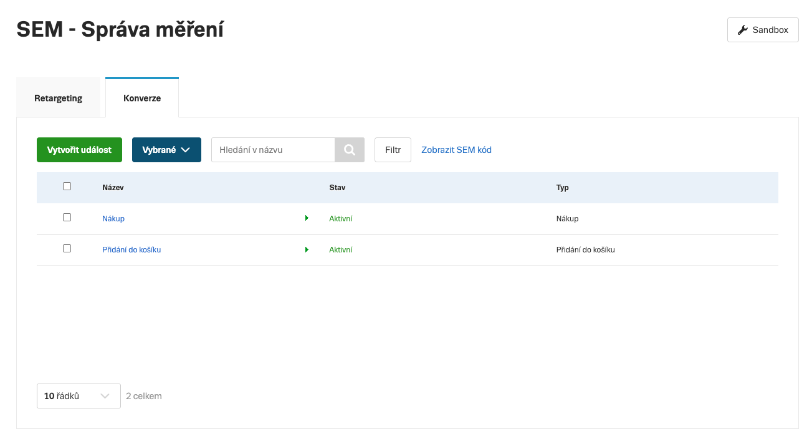

Správa konverzí
V sekci Správa měření → Konverze definujete, které SEM události se mají počítat jako konverzní akce, jakou mají hodnotu a za jakých podmínek.
Nastavení konverzí
Konverze definujete v kartě Konverze. Každá konverze je vázána na konkrétní SEM událost (např. Purchase) a určuje:
| Nastavení | Popis |
|---|---|
| Název konverze | Interní název pro přehlednost (např. „Nákup e-shop") |
| Událost | SEM událost, na které je konverze postavena (Purchase, Lead, CompleteRegistration…) |
| Hodnota konverze | Pevná částka bez DPH, nebo dynamická hodnota z parametru value události (vždy bez DPH) |
| Podmínky | Volitelné filtry – konverze se počítá pouze při splnění podmínek (viz níže) |

Podmínky konverzí
Ke každé konverzi lze přidat podmínky, které omezí, kdy se konverze započítá. Podporované podmínky:
| Podmínka | Příklad |
|---|---|
| URL stránky | obsahuje /dekujeme/ |
Typ obsahu (content_type) | je product |
Název obsahu (content_name) | obsahuje Premium |
Kategorie (content_category) | je Elektronika | Mobilní telefony | Apple |
ID produktu (contents[].id) | je SKU-001 |
Hodnota nákupu (value) | větší než 500 CZK |
| Pohlaví uživatele | žena |
| Město | Praha |
| Stát | Česká republika |
| Zdroj události | Web / App |
Podmínky uvnitř jednoho objektu v poli contents platí jako AND.
Podmínky přes více objektů v poli fungují jako OR – stačí, aby splnil jeden z nich.
Přehled parametrů SEM skriptu, které odpovídají jednotlivým podmínkám, najdete v sekci Retargetingové seznamy – parametry podmínek.
Ke každé konverzní události SEM automaticky vytvoří odpovídající retargetingový seznam obsahující uživatele, kteří konverzi dokončili. Přehled typů RTG seznamů a tvorba vlastních viz Retargetingové seznamy.
E-shopy napojené na Zboží.cz (provozovny)
Pokud provozujete e-shop napojený na Zboží.cz, pro správné odesílání konverzí za účelem získání zpětné vazby (recenze produktů) musíte použít kombinované SEM ID příslušné provozovny – ne obecné SEM ID účtu.
Kombinované SEM ID obsahuje identifikátor účtu i provozovny a zajišťuje správné přiřazení zpětné vazby ke konkrétní provozovně. Najdete ho v Správě měření – ke každé provozovně existuje vlastní záznam.
Další kroky
Conversion management
In the Event Management → Conversions section you define which SEM events should be counted as conversion actions, what value they have, and under what conditions.
Conversion setup
You define conversions in the Conversions tab. Each conversion is linked to a specific SEM event (e.g. Purchase) and determines:
| Setting | Description |
|---|---|
| Conversion name | Internal name for clarity (e.g. "E-shop purchase") |
| Event | The SEM event the conversion is based on (Purchase, Lead, CompleteRegistration…) |
| Conversion value | A fixed amount excl. VAT, or a dynamic value from the event's value parameter (always excl. VAT) |
| Conditions | Optional filters – the conversion is counted only when conditions are met (see below) |
Conversion conditions
You can add conditions to each conversion that restrict when the conversion is counted. Supported conditions:
| Condition | Example |
|---|---|
| Page URL | contains /thank-you/ |
Content type (content_type) | is product |
Content name (content_name) | contains Premium |
Category (content_category) | is Elektronika | Mobilní telefony | Apple |
Product ID (contents[].id) | is SKU-001 |
Purchase value (value) | greater than 500 CZK |
| User gender | female |
| City | Praha |
| Country | Czech Republic |
| Event source | Web / App |
Conditions within a single object in the contents array act as AND.
Conditions across multiple objects in the array work as OR – only one needs to be satisfied.
For an overview of SEM script parameters corresponding to individual conditions, see Retargeting lists – condition parameters.
For each conversion event, SEM automatically creates a corresponding retargeting list containing users who completed the conversion. For an overview of retargeting list types and how to create custom ones, see Retargeting lists.
E-shops linked to Seznam Shopping (store outlets)
If you operate an e-shop linked to Seznam Shopping, to correctly send conversions for the purpose of obtaining customer feedback (product reviews) you must use the combined SEM ID of the relevant store outlet – not the general account SEM ID.
The combined SEM ID contains both the account identifier and the store outlet identifier, ensuring that feedback is correctly attributed to the specific store. You can find it in Event Management – each store outlet has its own record.